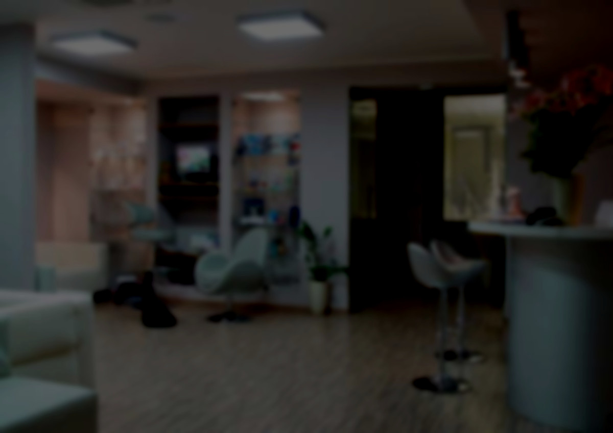

Zapraszamy Państwa do naszej przychodni Bryły 6, gdzie świadczymy specjalistyczną i kompleksową opiekę stomatologiczną, a także usługi z zakresu medycyny estetycznej. Doskonale wiemy, jak ważny jest piękny i zdrowy uśmiech, dlatego dokładamy wszelkich starań, aby pacjenci opuszczali przychodnię z pełną satysfakcją – zarówno z efektów leczniczych jak i estetycznych. Dbamy o to, aby każdemu kto odwiedzi naszą przychodnię już od momentu rejestracji towarzyszyła życzliwa i przyjazna atmosfera. Do tej pory zaufało nam ponad 27 tysięcy pacjentów. Wśród nich całe rodziny - od ich najstarszych, aż po tych najmłodszych członków. Każdy z naszych pacjentów może mieć pewność , że leczenie będzie indywidualnie dobrane do jego potrzeb, kompleksowe i skuteczne.

Stefana Bryły 6, 02-685 Warszawa
Zakres oferowanych przez nas usług z zakresu stomatologii obejmuje:
-
Leczenie zachowawcze
Dbanie o to, aby zachować zęby w naturalnym kształcie i kolorze, dzieki profilaktyce oraz zabiegom takim jak wypełnianie ubytków. -
Leczenie endodontyczne
Powszechnie znane jako leczenie kanałowe. Ma za zadanie rozpoznanie oraz leczenie chorób miazgi oraz tkanek okołowierzchołkowych. -
Leczenię chirurgiczne:
Leczenie operacyjne jamy ustnej oraz okolic przyległych.- usuwanie zębów
- usuwanie zębów zatrzymanych
- usuwanie torbieli oraz zmian w kości wraz z histopatologicznym badaniem
- resekcje zębów
-
Leczenie implantologiczne i zabiegi augamentacyjne kości
Najbardziej innowacyjna metoda odbudowy brakujących zębów. -
Leczenie protetyczne
Mające na celu uzupełnianie braków zębowych, oraz poprawianie niedoskonałości w kształcie zębów.- korony i mosty porcelanowe
- korony i mosty pełnoceramiczne
- licówki
- protezy osiadające, szkieletowe, elastyczne
- prace kombinowane (zatrzaski, teleskopy)
-
Leczenie periodontologiczne
Leczenie chorób tkanek wokół zęba – dziąseł i kości.- leczenie choroby przyzębia
- zabiegi regeneracyjne na tkankach przyzębia
- pokrywanie recesji
- leczenie chorób błony śluzowej
-
Leczenie bruksizmu:
- szyny relaksacyjne
- lpodawanie toksyny botulinowej w mięśnie żwacze
Lista pracowników medycznych
| poniedziałek | wtorek | środa | czwartek | piątek |
|---|---|---|---|---|
| lek. dentysta Anna Grzegorczyk-Jaźwińska | ||||
| 1000 - 1300 | 1000 - 1300 | 1530 - 1915 | ||
| lek. dentysta Maciej Nowak | ||||
| 1600 - 2000 | 1000 - 1330 | |||
| lek. dentysta Bartosz Pawłowski | ||||
| 900 - 1300 | 900 - 1200 | 900 - 1100 | ||
| lek. dentysta Agnieszka Suchodolska | ||||
| 900 - 1230 | 1400 - 1900 | 1400 - 1900 | 900 - 1230 | 900 - 1230 |
| lek. dentysta Beata Marcinkowska | ||||
| 900 - 1330 | 1400 - 1930 | 1400 - 1930 | ||
| lek. dentysta Katarzyna Kessler-Furman | ||||
| 1500 - 1830 | 1000 - 1300 | 1500 - 1830 | ||